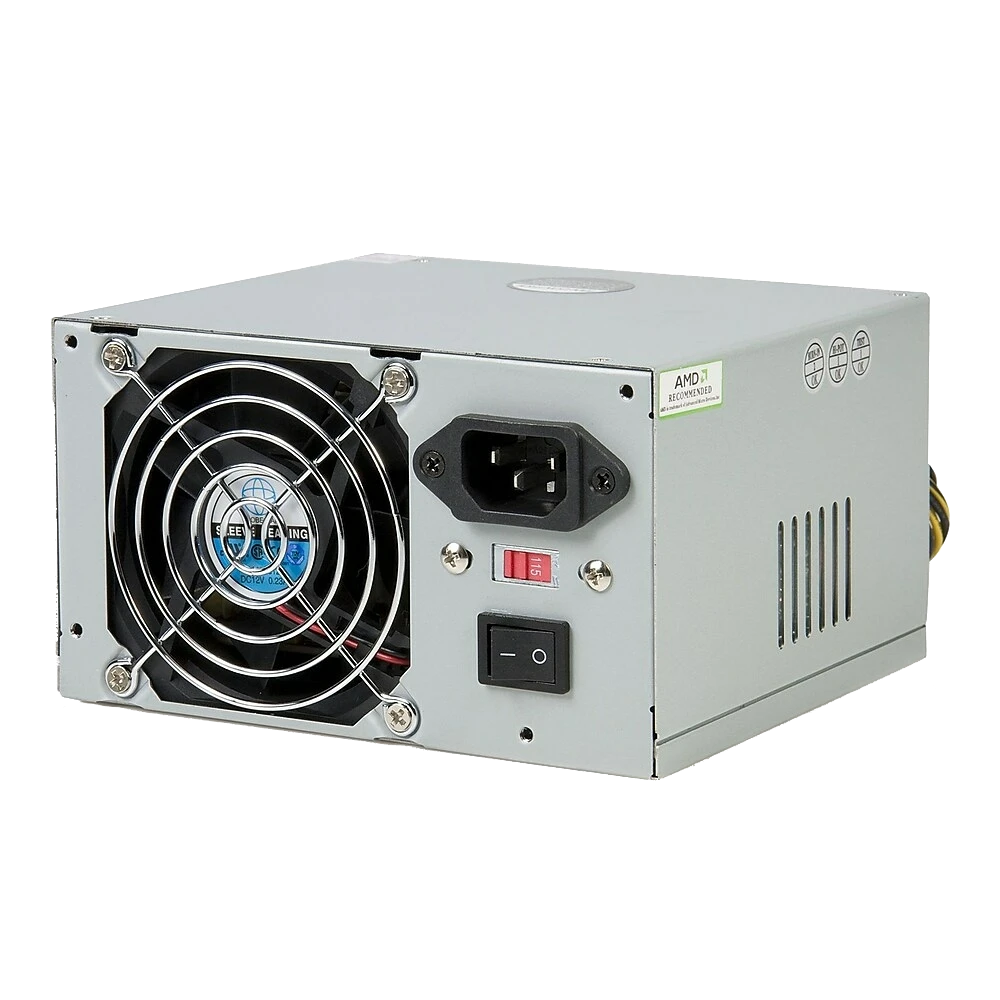
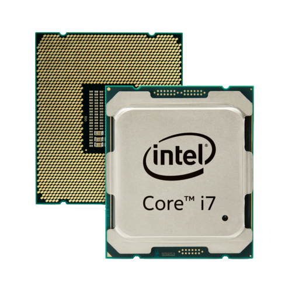
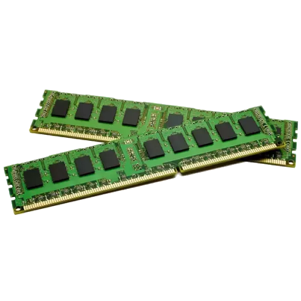
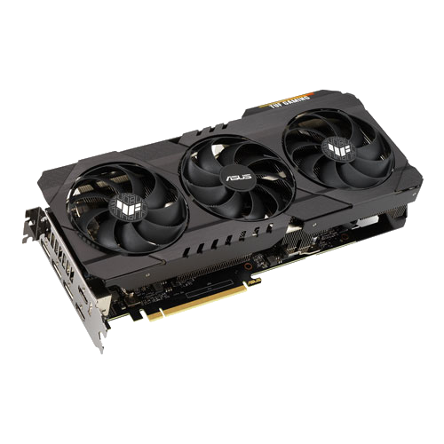
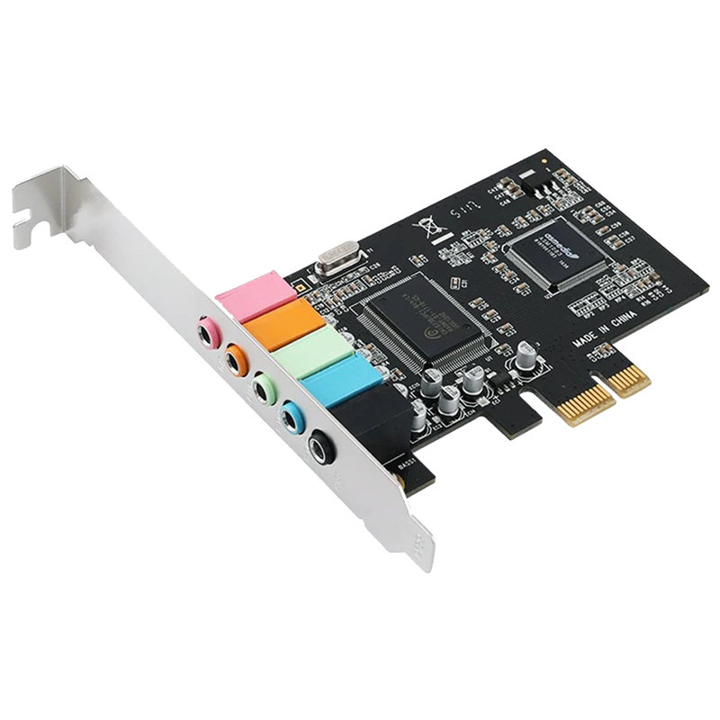
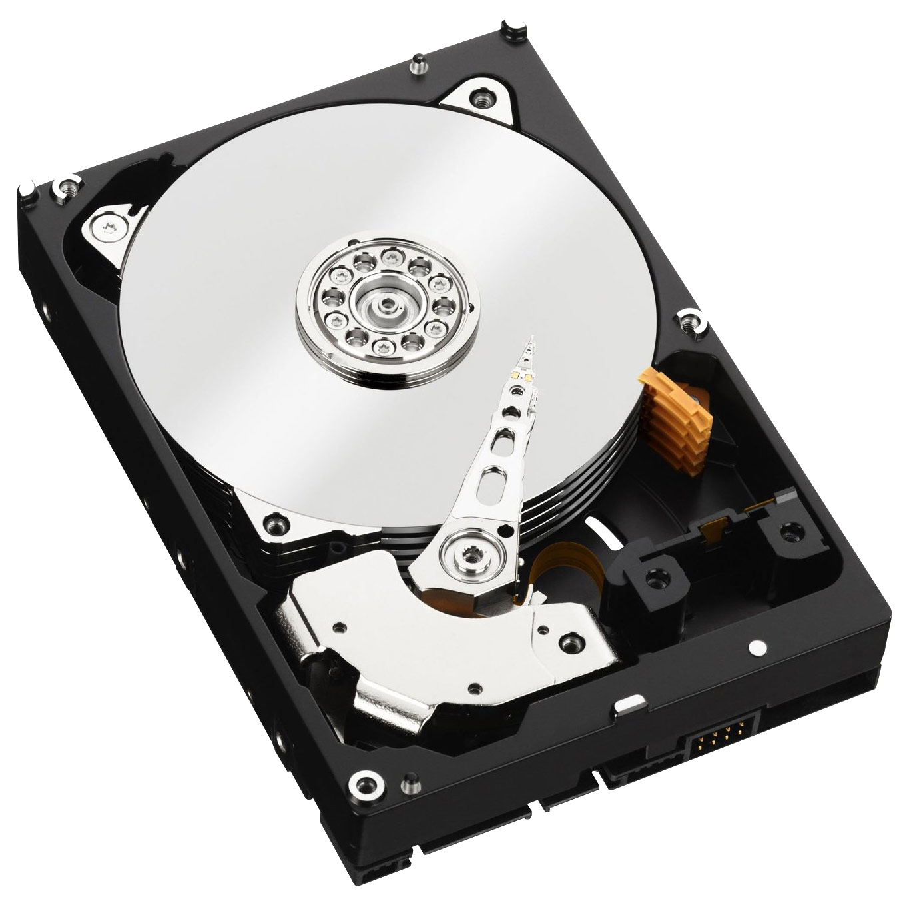
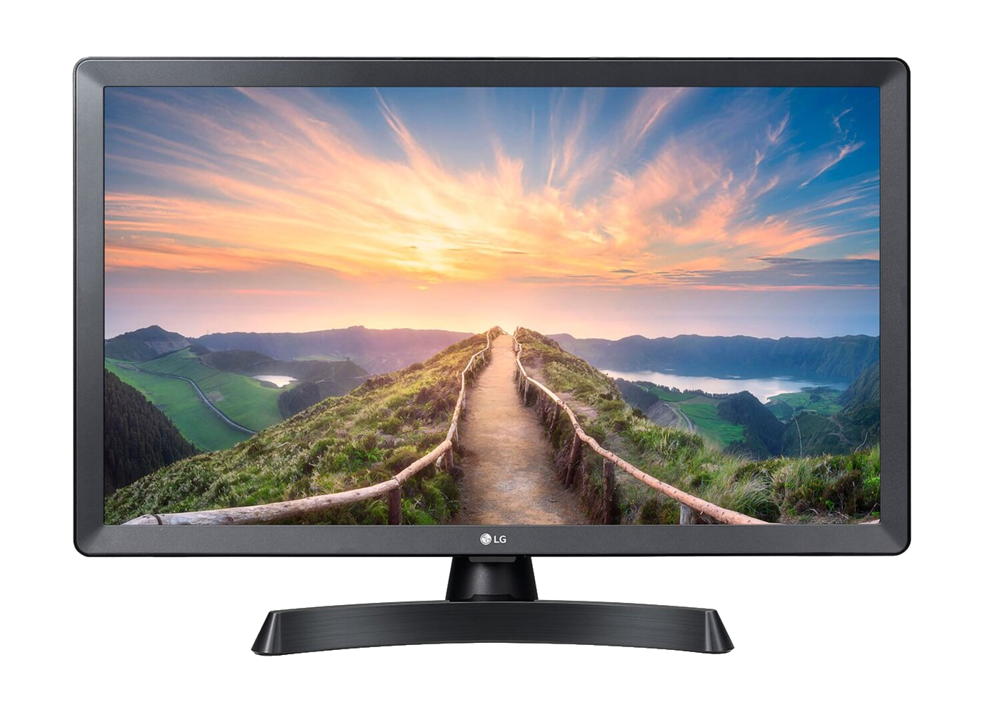

| Component name | Image | Description |
| Motherboard |  |
The motherboard is arguably the most important component in a computer. All the other hardware components are connected to this printed circuit board. It allows communication between the different computer hardware components. It is also the biggest board in a computer chassis.
Motherboards are relatively harder to fix, since there are so many smaller sections and slots on the motherboard. Most people choose to purchase a new device rather than spending money on fixing the motherboard. |
| Computer tower/case |  |
The case is a enclosed, rectangular computer chassis that contains all the parts used to put together a computer. It is usually the biggest object that comes with a desktop computer. Laptops do not have these, since the purpose of laptops is for convenient carriage.
Computer cases are usually made out of steel, aluminum and plastic. They also come in different colors, the most common colors being black, urban white, and white. The purposes of computer cases are to organize and hold the different hardware components, protecting the components from damage, reduces the noises and overheating of the computer, and for aesthetic purposes (having a lot of circuit boards, wires, and computer components piled up is not aesthetically pleasing). |
| Power supply |  |
The power supply does what its name describes, it supplies power to other computer hardware components needed to make the computer run properly. It is capable of converting alternating current (110-115 or 220-230 volt) into direct current which has a lower voltage and is usable by the computer.
Something to note is that we should not open the casing of a power supply, there are capacitors in the case which hold strong electrical charge. Since the power supply is all about electricity, the electricity running in it is measured in Watts. Inside the power supply, there are 4 main parts. The rectifier converts the alternating current into direct current, a filter which smooths out the direct current coming out of the rectifier, a transformer which controls the incoming voltage, and a voltage regulator which controls the direct current output and makes sure the correct amount of power is supplied to the computer hardware components. |
| CPU |  |
The CPU (Central Processing Unit) is the "brain" of the computer, as it interprets and executes tasks and stores data. It takes input from a peripheral or a computer program, interpret its needs, and either outputs information to the monitor or performs the requested task.
Inside the CPU, there are two main components - the Control Unit (CU) and the Arithmetic Logic Unit ALU). The CU directs all the operations, it interprets the instructions sent into the computer. The ALU then performs the tasks. The two main producers of CPU are Intel and AMD. The naming of the CPUs can get confusing at times. Below is an image explaining how to understand CPU names: 
In the case of CPUs, the higher the value of the number, the better the CPU is (within the same brand). We should pay special attention to the core of the CPU. It is basically a smaller CPU unit built inside the big CPU. Its job is to perform all computational tasks independently, therefore it is very important. For a laptop used for personal, daily use, 4 cores is enough (lowest). Gaming computers usually have 8 cores. |
| RAM |  |
The RAM (Random Access Memory) should not be confused with the hard drive/the SSD. The RAM temporary stores data that was selected from the hard drive. These data selected are the data needed to complete the task the user wishes to complete. When the computer is shut down, all data contained in RAM is erased. Therefore, RAM is a kind of volatile memory and requires power to keep the data accessble. If you still find it confusing, remember that its called a "memory" not a "storage" for a reason. Just like human memory, we forget things after a period of time. The RAM works in a similar way. It forgets everything after you shut down the computer.

The image above has the RAM circled for us. RAM is measured in GB (gigabytes). It comes in 4GB, 8GB, 16GB, and 32GB. The higher the GB, the better the computer's ability to run different programs at the same time will be. Normally, 8GB is the best choice for a laptop used for general purposes (every day use). Gaming laptops, especially competitive gaming, usually requires 16GB to 32GB. |
| Graphics/Video card |  |
The Graphics/Video card is an expansion card connected to the motherboard. It allows graphics to show on the monitor, therefore it is very crucial to a computer.
The two main graphics card producers are NVIDIA and AMD. Their naming system for graphics cards can be found here. For summary, the higher the value of the number, the better the graphics card is. Always pay attention to the first number following behind the prefix, because it indicates the generation, and it is common knowledge that the newer the generation, the more advanced the product is. Graphics cards are especially important to gaming computers, because gaming requires high quality graphics in order for gamers to perform their best. Graphic cards are usually also one of the most expensive computer hardware components. |
| Sound card |  | Similar to Graphics/Video cards, a Sound card is a extension card connected to the motherboard which allows sound to be produced on a computer and heard through speakers/headphones. The sound card isn't necessary for a computer to work normally, since many devices already have a decent sound quality, but it is normally included for and enhanced experience. Activities like gaming, video editing, and listening to music can all benefit from the function of sound cards. |
| Hard drive/SSD |  |
The hard drive is a non-volatile data storage device. As mentioned before in the RAM section, RAM gets its data from the hard drive. The hard drive contains all the data you have on the computer, and you will not lose it if you turn off the computer, which is different from RAM. The hard drive is usually installed inside a computer and attached to the disk controller of the motherboard.
Since the hard drive contains all the data in the computer, it requires a lot more storage area compared to RAM. It usually comes in 128GB, 256GB, 512GB or 1000GB (equals to 1TB). Normally, we don't recommend buying computers with the hard drive storage of 512GB or 1TB, unless the user wishes to download a lot of games and media. For reference, games like League of Legends takes up about 22GB, and Fortnite takes up about 90GB. For media like images, videos and music, it varies from person to person, but usually they take up 50+GB. For students and all normal users, 128GB should be enough. If you wish to download a few games, 256GB will be more than enough. Historically, many manufacturers have produced hard drives. Currently, most of them are being produced by Seagate, Toshiba, and Western Digital. SSDs (Solid State Drive) have mostly the same functions as the hard drive, but it is newer. It was first introduced by SanDisk. An SSD looks a lot simpler compared to a hard drive, in fact, it doesn't have any moving parts. This gave it multiple advantages, such as faster access time, noiseless operation, higher reliability, lower power consumption, and more. Another main difference between SSDs and hard drives is that hard drives have more storage than SSDs. If you are a customer looking for a large storage, hard drive is the better choice. Hard drives are also relatively cheaper compared to SSDs. Click here if you want to learn more about SSDs. |
| Monitor |  | The monitor is an output device that displays the graphics and text generated by the graphics card. It is considered and output device because it is simply displaying the information processed by the computer hardware components, and there is no source of input. The monitor is made up of circuitry, buttons to adjust screen settings, a power supply, and a casing that holds everything. There are two types of monitors, the CRT (cathode-ray tube) monitor and the LCD (liquid-crystal display) monitor. The CRT is the oldest monitor. The LCD has two variations for backlighting - CCFL and LED. |
| Peripherals | A peripheral, or an auxiliary device, is an input or output device that provides the computer with additional functionality. They are not essential for a computer to function normally, but they do provide the user with a better user experience. They do not come with the package when you buy a computer, since they are other devices or tools separate from the computer. Some examples for an auxiliary input device are a mouse, a keyboard, and a camera. They are called auxiliary input devices because they are transferring data into the computer. Some examples for an auxiliary output are a printer, a computer monitor, and a speaker. They are called auxiliary output devices because they are receiving data from the computer. There are also devices that can be both an auxiliary input and output device. For example, a USB. You can both transfer data from the USB into the computer or transfer data from the computer into the USB. | |
| Operating System Software |  |
An operating system software (OS) is a software installed on the hard drive of a computer that allows the computer hardware to communicate and cooperate with the computer software. Without it, the softwares and hardwares wouldn't be able to "understand" each other and work together to complete the user's commands. The OS allows everything to flow. It is like the bridge of communication between the user, the softwares, and the hardwares. The most popular operating systems include Microsoft Windows, MacOS, Linux, Google, and Android (Android is a mobile operating system). |